n_delays_5 (val/one_step_mase = 0.0056)Description: Encoder-only, awake + maintenance dose, ds=1 (1000 Hz). Two-stage PCA with first-stage=0.9, second-stage=0.99. n_delays grid: {5, 10, 20, 30}. Pure reconstruction loss (no dynamics MLP, no VAE).
Hypothesis
The 24-run sweep's 0.9-first-stage runs have suspiciously bad
reconstruction. Hypothesis: with only ~80 dims after first-stage
reduction, the encoder + autodim has too little signal to fit
well within walltime. By extending n_delays we increase the
encoder's input dimensionality (n_features × n_delays) and give
autodim more context to pick PCs that actually capture variance.
If reconstruction improves monotonically with n_delays, the issue
is capacity / context size. If it stays flat, the 0.9 first-stage
has discarded structure the encoder needs and the right fix is to
raise the first-stage threshold.
Success criteria (manual review until automated):
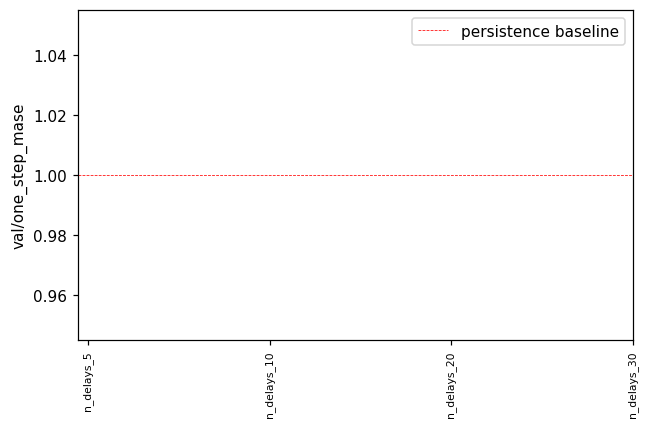
Chose n_delays_5 (val/one_step_mase = 0.0056). val/one_step_mase < 1 would mean beating persistence (predicting x_{t+1} ≈ x_t); on 1 kHz LFP the persistence baseline is hard to beat per-step even when 30-step R² is high.
n_delays_5 cell params: {'n_delays': 5}
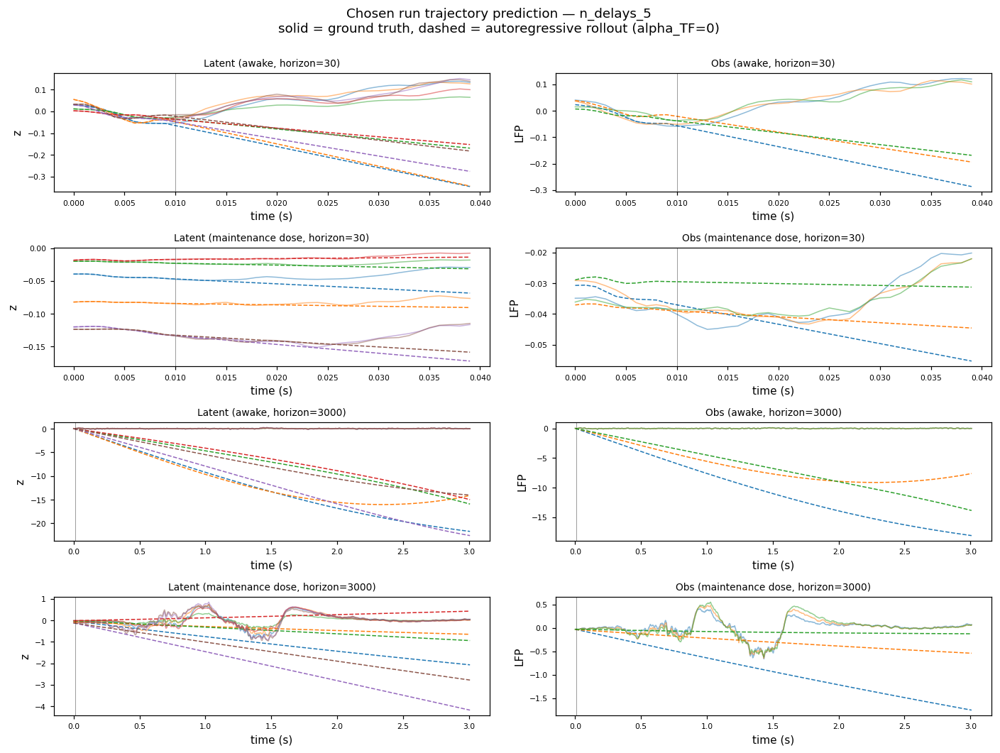
Solid = ground-truth, dashed = autoregressive rollout (alpha_TF=0). Top: latent space (top-6 dims). Bottom: observation space (top-3 LFP channels). Vertical line marks burn-in / start-of-rollout boundary.
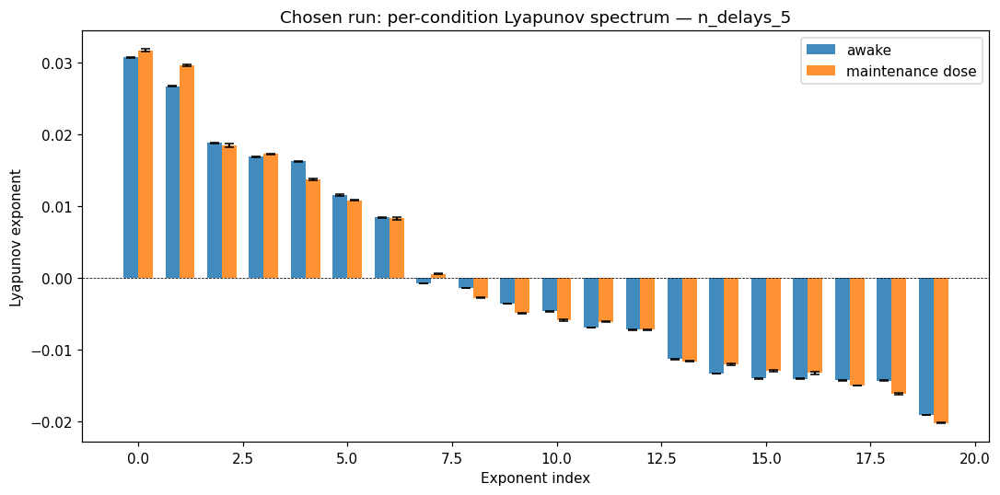
Bars = mean ± std across the chosen-cell's trajectories within each condition. No empirical / GT comparison — for neural data we only have model-predicted exponents.
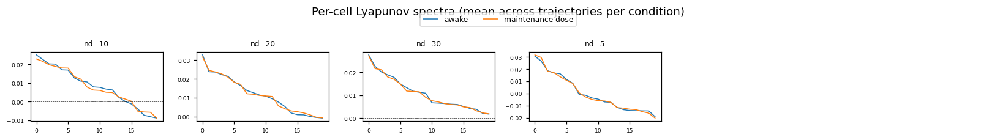
Each subplot is one cell's per-condition Lyapunov spectrum (mean across that cell's trajectories). Watch for monotone trends as n_delays increases and for any cell where the conditions cleanly separate.
For each ordered (source → target) area pair, we compute the reach / ctrl / obs gramians of the chosen run's predicted Jacobian's cross-area blocks. Bars show log_trace (top row) and log_min_eig (bottom row — the LOG of the SMALLEST eigenvalue, i.e. the bottleneck-dim energy) per condition, with SEM error bars across the cell's trajectories. Pure model side — no GT since neural data lacks a ground-truth dynamical model. metric mode is currently identical to standard (encoder-Jacobian B_factor / C_factor not yet plugged in).
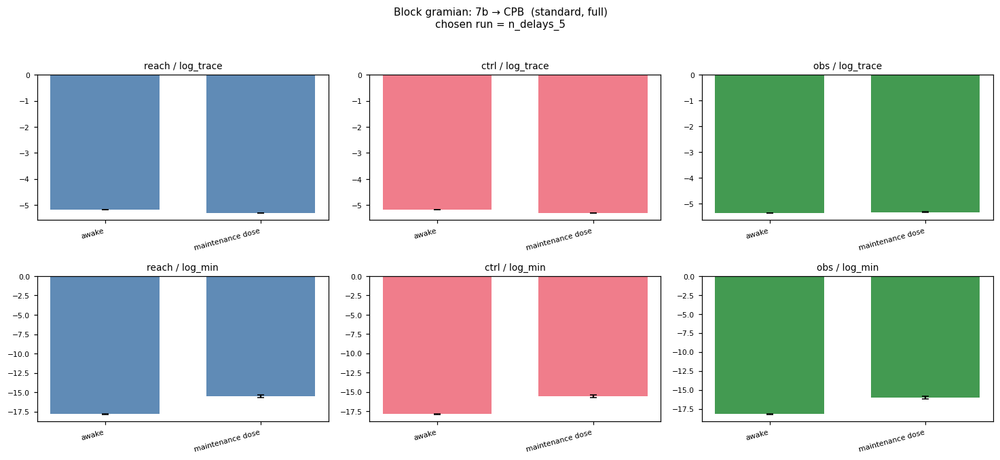
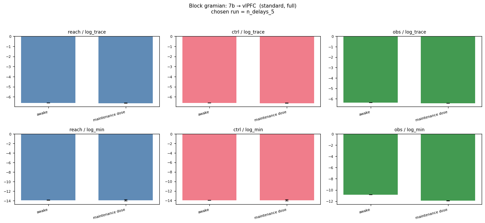
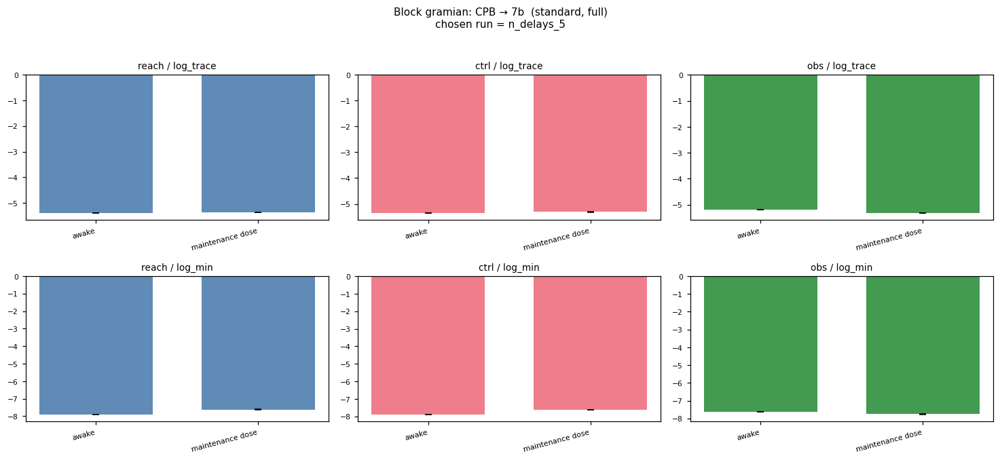
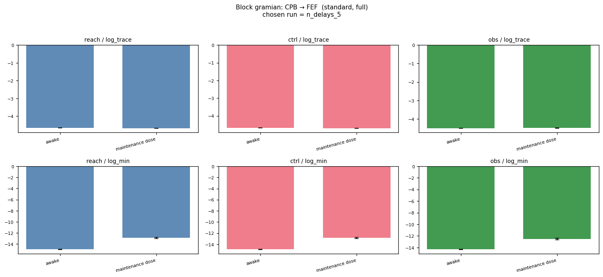
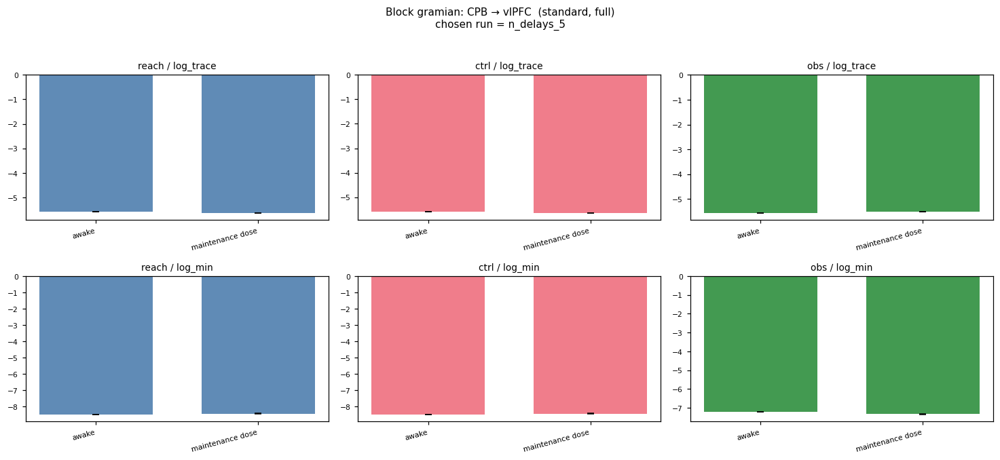
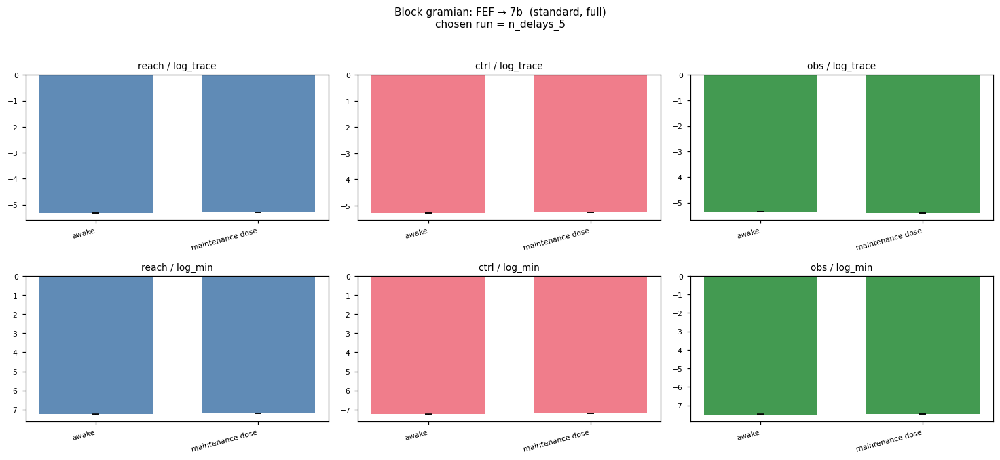
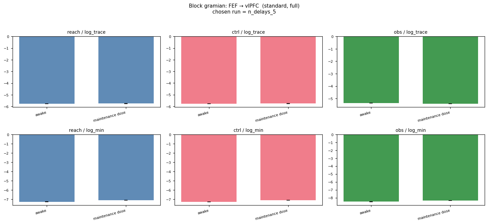
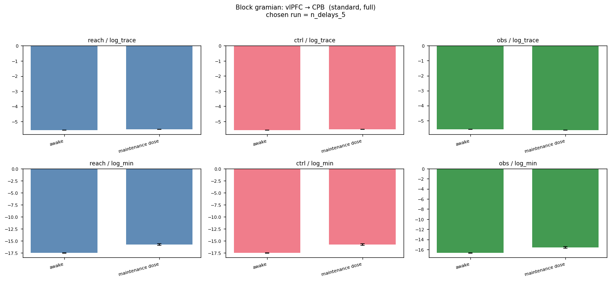
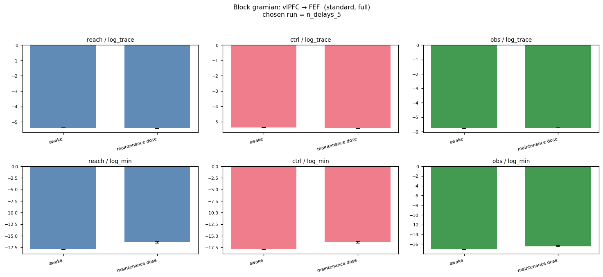
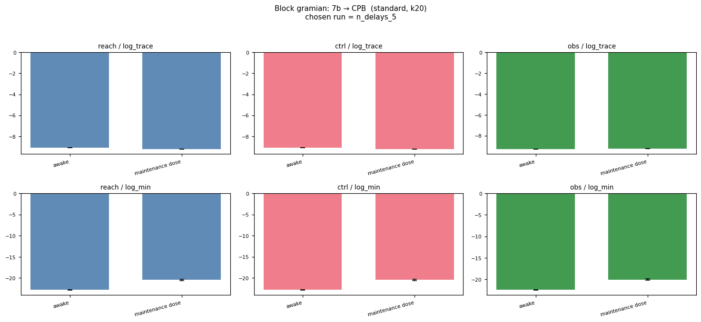
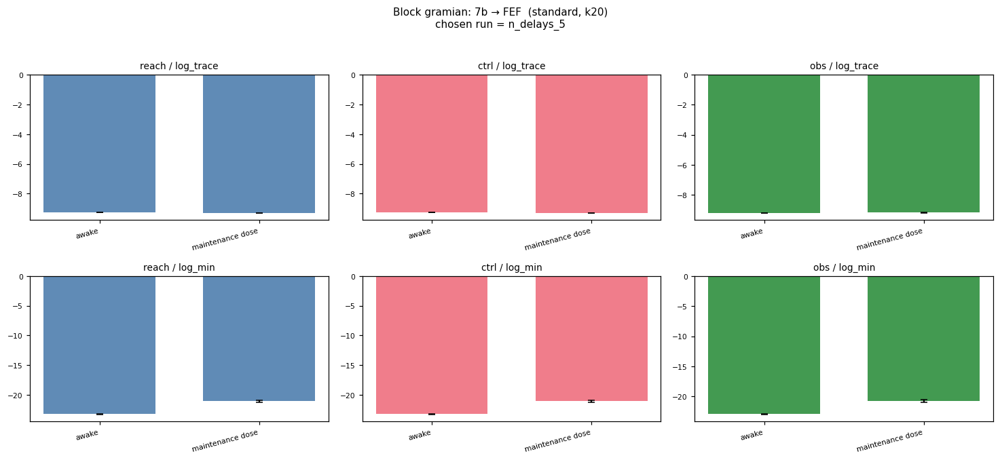
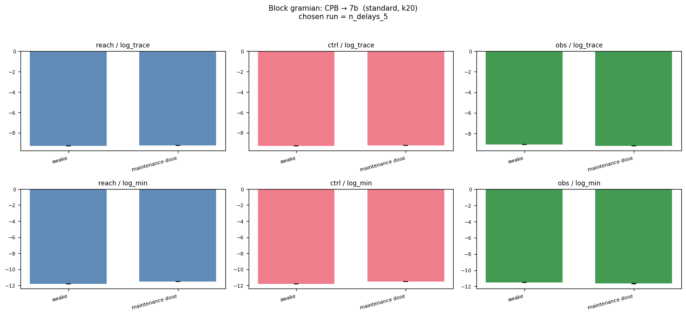
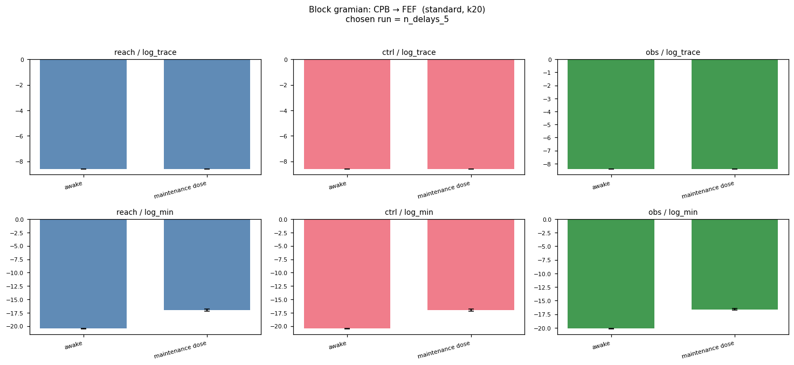
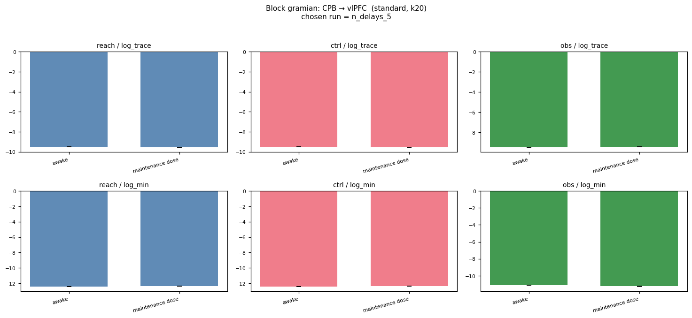
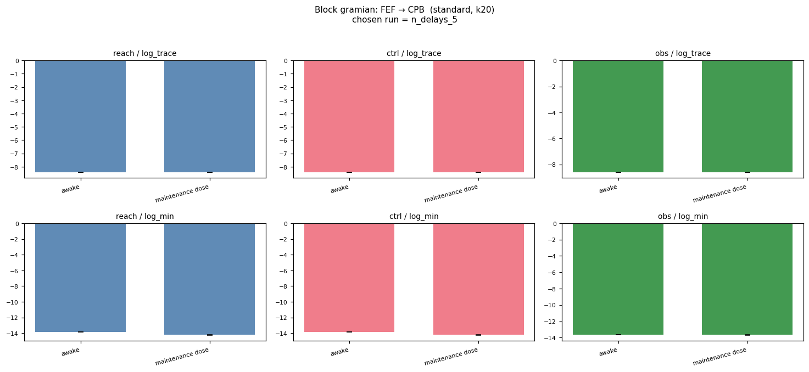
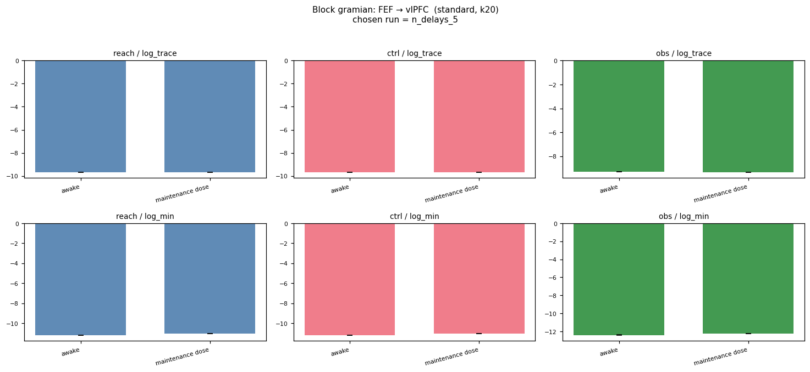
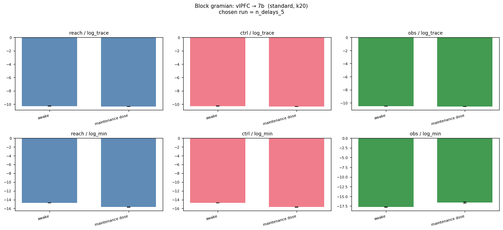
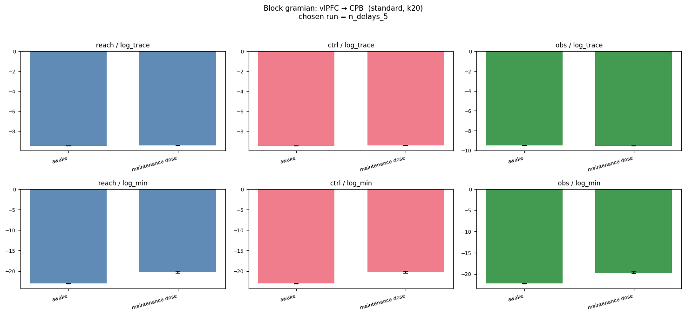
| run | n_delays | encoder_warmup | mean val loss | val/one_step_mase | val/total_loss | epoch |
|---|---|---|---|---|---|---|
n_delays_10 |
10 | ? | 0.0086 | — | 0.0086 | 20.0000 |
n_delays_20 |
20 | ? | 0.0079 | — | 0.0079 | 45.0000 |
n_delays_30 |
30 | ? | 0.0083 | — | 0.0083 | 65.0000 |
n_delays_5 |
5 | ? | 0.0056 | — | 0.0056 | 95.0000 |